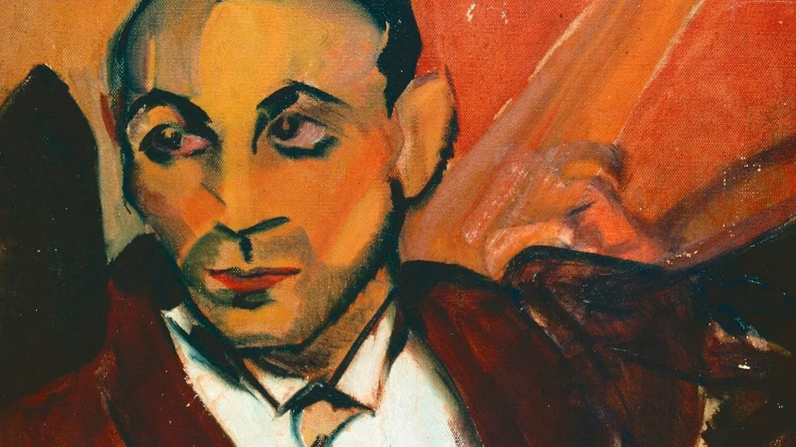

O Homem Amarelo
Artista: Anita Malfatti
Ano: 1915 - 1916
Descrição: A pintura mostra uma figura masculina com corpo alongado, traços deformados e cores fortes (predomínio do amarelo). É uma das obras mais marcantes da exposição de Anita em 1917.